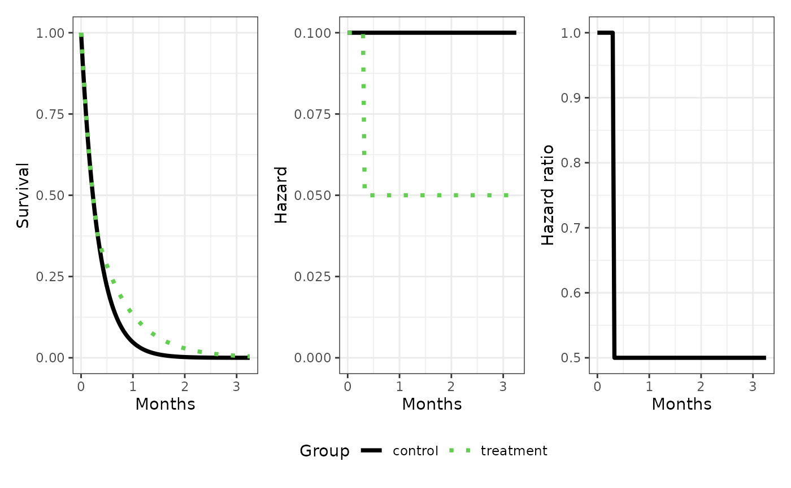
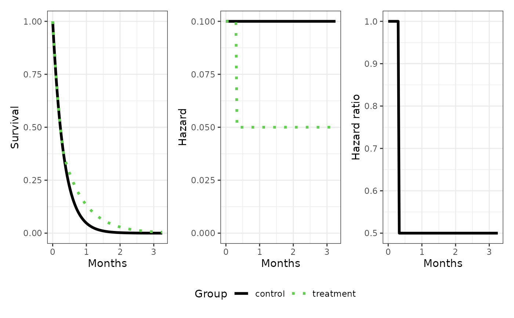

Plot of survival, hazard and hazard ratio of two groups as a function of time using ggplot and patchwork
Source:R/shhr_gg.R
shhr_gg.RdPlot of survival, hazard and hazard ratio of two groups as a function of time using ggplot and patchwork
Arguments
- A
mixpch object for group 1 (reference)
- B
mixpch object for group 2
- main
Title for the overall plot
- sub
Subtitle for the overall plot
- group_names
Group Names
- lab_time
Title for the time axis
- lab_group
Title group legend
- trafo_time
Function to transform time
- colours
vector of two colours
- linetypes
vector of two linetypes
- linewidths
vector of two linewidths
- as_list
return a list of ggplot objects instead of a patchwork object
Value
a patchwork object as defined in the patchwork package or a list of
ggplot objects if as_list=TRUE.
Examples
# \donttest{
library(ggplot2)
library(patchwork)
library(nph)
#>
#> Attaching package: ‘nph’
#> The following object is masked from ‘package:SimNPH’:
#>
#> m2r
B <- pchaz(c(0, 10, 100), c(0.1, 0.05))
A <- pchaz(c(0, 100), c(0.1))
shhr_gg(A, B)
 shhr_gg(A, B, lab_time="Months", trafo_time=d2m)

# }
shhr_gg(A, B, lab_time="Months", trafo_time=d2m)

# }